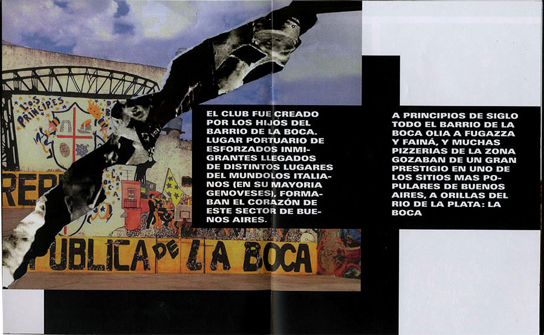
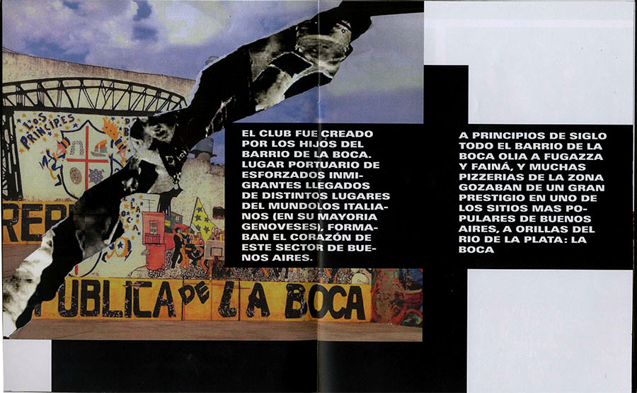

Micro-édition autour du quartier de la Boca à Buenos Aires. Loin d'être informatif, ce projet vient révéler l'aspect paradoxal du quartier argentin. /
Editorial object related to Boca's neighbourhood in Buenos Aires. Less than being informative, this project reveals the paradoxical aspect of the Argentinian neighbourhood.